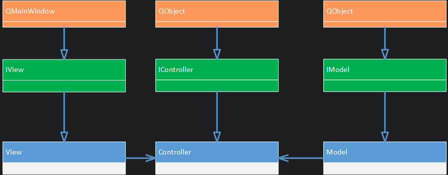
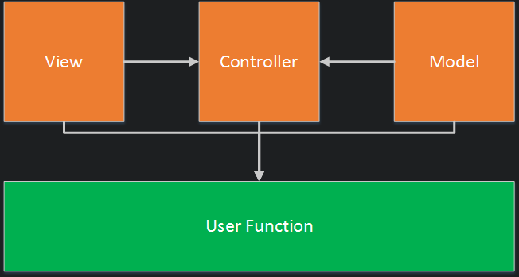

MVC in QT
Qt是一种跨平台的C++框架，本文结合作者经验，总结了MVC在Qt的具体实施细节。本文要求具备Qt编程经验并具备MVC的基本理解。
一.MVC
MVC是一个古老的界面设计方案，该方案存在三个角色：View视图，Controller控制器，Model模型，用于将界面设计的布局显示， 业务逻辑和数据保存进行解耦。这三个角色之间存在依赖关系，在不同的语言平台、界面框架下实施细节也不相同。通过Qt给界面设计MVC是非常简便的，因为MVC是一种灵活应用了策略模式，组合模式和观察者模式的复合模式，而观察者模式和组合模式在Qt中都已经依赖于QObject该类实现了，因此可以直接使用(这里指QObject的对象继承机制和Signal-Slot机制)。下图显示了最简化的QtMVC的UML：

二.View
1.职责
View对象实例化基础组件(如按钮，输入框等)、组件布局、监听Model信号和数据渲染。由于View不负责业务和数据逻辑，因此View是不需要依赖Controller和Model的。更进一步，View对象需要监听Model信号，也因此需要实现观察者模式，但是由于QObject自带观察者模式，因此只需要留出监听接口即可(Slots接口, 接收Model的Signal)
2.接口
接口需要解决的问题主要有：
- View如何告知Controller自己的情况：
- View如何将自己发生的事件告知Controller：
View作为人机交互的入口，需要将View上发生的事件发送给Controller。可以直接将View中的视图组件的信号发送给Controller，也可以给View自定义信号由View来发送信号。 - Controlle如何获得View上的数据:
View上面可能需要一些接口以方便Controller获取上面的数据，比如在QLineEdit输入的数据，这些数据不会保存在Model中，而是在View上，因此需要给Controller提供获取这些数据的接口。
- View如何将自己发生的事件告知Controller：
- 如何接收来自Model的信号：
Qt中的connect可以接收这类问题：connect(subject, signal, observer, slot);
该函数可以将model注册为subject，将view注册为observer，以让observer监听model的signal信号，当model发出signal信号便会交由slot函数进行处理。
因此需要提供slot接口，以处理model的信号。 - View如何连接Controller：
View被Controller所监听，View将会发送Signal至Controller。也依赖connect来实现该连接功能。
下面是一个接口方案，该方案省略对于ctor, dtor, copyt ctor以及copy asign的考虑，在实际的设计中需要纳入考虑范围。1
2
3
4
5
6
7
8
9
10
11
12class IDemoView : public QMainWindow{
Q_OBJECT
public: // 将Controller注册(或注销)为观察者
virtual void cc(const IPanelController& controller) = 0;
virtual void dc(const IPanelController& controller) = 0;
signals: // 通知Controller的接口
void send2cSignal(const QString& msg);
protected slots : // 接收Model信号的接口
virtual void rmSlots(const QString &msg) = 0;
};
3.实现
实现主要包括了描述了抽象类中的纯虚函数应该如何实现，决定了如何布局，需要那些组件，需要将controller注册到哪些信号上，如何响应model的信号等。1
2
3
4
5
6
7
8
9
10
11
12
13
14
15
16
17
18
19
20
21
22
23
24
25
26
27
28
29
30
31
32
33
34
35
36
37
38class SimpleDemoView : public IDemoView
{
Q_OBJECT
public:
SimplePanelView(QWidget *parent=nullptr):
IPanelView(parent){
// 组件的初始化和配置
...
// 布局
initLayout();
// 对组件的信号进行包装，再作为View的Signal信号传出去给controller
connect(button, signal, this, [=](){
emit wrapper-signal;
});
}
void cc(const IPanelController& controller) override{
// 将c中的slot注册到v的signal上
...
}
void dc(const IPanelController& controller) override{
...
}
private:
void initLayout(){
// 进行初始布局
...
}
void rmSlots(const QString &msg) override{
// 通常接收到模型信息，需要对视图的显示做更新
...
}
private: // 各类组件
QPushButton *startButton;
QPushButton *closeButton;
QLineEdit *input;
};
三.Controller
1.职责
Controller主要负责接收来自View的信号(通常为人机交互信号，也可以包括定时器等非人机交互信号)，并对这些信号进行处理。Controller的职责权利很大，是业务逻辑处理的实体，既可以操纵View，也可以数据处理操纵Model。
2.接口
接口解决的问题主要有：
- 接收哪些View的信号：
Controller需要哪些View的信息，这由具体业务决定。先从业务入手，然后编写该Slot接口。 - 如何依赖Model和View：
一方面，Controller需要读写View和Model，因此需要依赖于View和Model，也就需要给Controller配置View和Model的接口。另一方面，借助shared_ptr来进行依赖，因为这样可以使用C++11提供的内存自动管理能力。最后，应该依赖于抽象。
1 | class IDemoController : public QObject{ |
3.实现
在实现中只需要编写如何响应View的信号。需要注意的是Controller的一切行为都应该依赖于View信号的驱动。1
2
3
4
5
6
7
8
9class SimpleDemoController :public IDemoController{
Q_OBJECT
protected slots :
void rvSlot(const QString& msg) override{
// 具体业务处理逻辑
...
}
};
四.Model
1.职责
Model的主要职责是负责数据的存储，并当数据被修改时发出信号以告知View。View可以通过信号拿到数据并决定了如何去渲染数据。
2.接口
接口解决的问题主要有：
- 需要有哪些Signal：
通常只要是对模型的写入操作，都应该发送Signal。 - Model如何配置视图：
Model发送信号的目的是告知View，因此需要在Model中对其信号注册到View上。由于Model并不读写View，因此Model并不依赖View。 - Controller如何控制Model：
根据数据特定，具体业务决定。不过需要注意的是，在写Model时，应该提供sync这一参数来决定对Model的修改是否应该发送信号, 默认为发送信号。
1 | class IDemoModel : public QObject{ |
3.实现
主要编写模型如何响应来自Contrller的控制。1
2
3
4
5
6
7
8
9
10
11
12
13
14
15
16
17
18
19
20
21class DemoModel : public IDemoModel{
public:
void set(const QString& data, bool sync = true)override{
...
if(sync){
emit signal;
}
}
void clear(bool sync = true) override{
...
if(sync){
emit signal;
}
}
const QString& get() const override{
return text;
}
private:
QString text;
};
五.Link
由上可知，一个页面通常暗含了3个角色：Model，View，Controller，并且这三者之间存在着依赖关系。那该如何将这些角色进行连接，建立依赖关系呢？主要从四方面出发：
- 简便的内存管理方案。
- 无循环依赖。为了利用C++的智能指针管理内存，尽量避免架构中可能存在的循环依赖问题。比如不能View依赖Controller，Controller又依赖View，否则内存不能自动释放。
- 先初始化后建立连接。也就是三个角色应该先实例化，再通过连接方法，进行设置。
- 依赖于接口。虽然这3个角色存在依赖关系，但是为了尽量解耦，减少依赖关系，因此应该依赖的抽象接口，而非具体实现。
由上述的实现已经可以得出对于初始化和连接应该如下述代码使用：1
2
3
4
5
6
7
8
9
10
11// 1).初始化
std::shared_ptr<IDemolController> c(new SimpleDemoController);
std::shared_ptr<IDemoView> v(new SimpleDemoView);
std::shared_ptr<IDemoModel> m(new DemoModel);
// 2).连接
c->setView(v);
c->setModel(m);
// 3).显示
v->show();
可以从上述代码中看出，通过智能指针可以实现简便内存管理，先进行ctor的执行在setView/setModel来进行配置以达到先初始化后建立连接的目标，并且通过指针指向基类对象来实现对于接口的依赖。上述的接口也不存在循环依赖，依赖关系如下图所示(A—>B 表示B依赖于A，即B中包含了A对象)：

也只有当对一个对象的依赖链进行DFS/BFS可以找到自身时才可能会出现循环依赖，而对于本接口的实现而言每个对象依赖链不会找到自身。因此实现了无循环依赖的MVC方案。